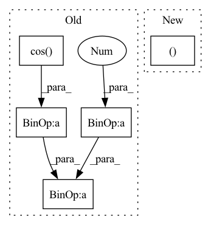

Pattern ID :28834

Before Change
seq_len, batch_size, n_heads, d = x.shape
// $\frac{d}{2}$
d_2 = d // 2
// Create position indexes `[0, 1, ..., seq_len - 1]`
seq_idx = torch.arange(seq_len, device=x.device).type_as(self.theta)
// Calculate the product of position index and $\theta_i$
idx_theta = torch.einsum("n,d->nd", seq_idx, self.theta)
// Concatenate so that for row $m$ we have
// $[m \theta_0, m \theta_1, ..., m \theta_{\frac{d}{2}}, m \theta_0, m \theta_1, ..., m \theta_{\frac{d}{2}}]$
idx_theta2 = torch.cat([idx_theta, idx_theta], dim=1)
// Calculate $[-x^{(\frac{d}{2} + 1)}, -x^{(\frac{d}{2} + 2)}, ..., -x^{(d)}, x^{(1)}, x^{(2)}, ..., -x^{(\frac{d}{2})}]$
neg_half_x = torch.cat([-x[:, :, :, d_2:], x[:, :, :, :d_2]], dim=-1)
// Calculate
//
// \begin{align}
// \begin{pmatrix}
// x^{(i)}_m \cos m \theta_i - x^{(i + \frac{d}{2})}_m \sin m \theta_i \\
// x^{(i + \frac{d}{2})}_m \cos m\theta_i + x^{(i)}_m \sin m \theta_i \\
// \end{pmatrix} \\
// \end{align}
//
// for $i \in {1, 2, ..., \frac{d}{2}}$
rx = (x * idx_theta2.cos()[:, None, None, :]) + (neg_half_x * idx_theta2.sin()[:, None, None, :])
//
return rx
After Change
x_rope = (x_rope * self.cos_cached[:x.shape[0]]) + (neg_half_x * self.sin_cached[:x.shape[0]])
//
return torch.cat((x_rope, x_pass), dim=-1)
class RotaryPEMultiHeadAttention(MultiHeadAttention):
In pattern: SUPERPATTERN
Frequency: 3
Non-data size: 5
Instances
Fragment ID: 84760524
Project Name: lab-ml/nn
Commit Name: 0ce65adf9e602321109528b05cf99fccb16cd2de
Time: 2022-06-03
Author: vpjayasiri@gmail.com
File Name: labml_nn/transformers/rope/__init__.py
M Class Name: RotaryPositionalEmbeddings
N Class Name: RotaryPositionalEmbeddings
M Method Name: forward(2)
N Method Name: forward(2)
M Parent Class: nn.Module
N Parent Class: nn.Module
M File Name: labml_nn/transformers/rope/__init__.py
N File Name: labml_nn/transformers/rope/__init__.py
M Start Line: 132
M End Line: 163
N Start Line: 171
N End Line: 193
'>
Before Change
if type(poses)==dict: poses = list(poses.values())
for p in poses:
center = (p.eye[0:2] - np.array((min_x, min_y)))*scale
end= center+15*scale*np.array((-np.cos(p.phi), -np.sin(p.phi)))
cv2.circle(img, (int(center[0]), int(center[1])), 6, (0,0,255), 4)
if draw_arrows:
cv2.arrowedLine(img, (int(center[0]), int(center[1])), (int(end[0]), int(end[1])), (0,0,255), 4)
After Change
if pose_descriptions is not None:
for do in pose_descriptions[i_p]:
object3d = objects_dict[do.id]
end = np.int0(( 0.5*(np.max(object3d.points_w[:, 0:2], axis=0) + np.min(object3d.points_w[:, 0:2], axis=0)) - np.array((min_x, min_y))) * scale)
cv2.arrowedLine(img, (center[0], center[1]), (end[0], end[1]), (255,255,255), thickness=2)
return img
'>
Fragment ID: 84760521
Project Name: mako443/text2pos-cvpr2022
Commit Name: 6d0e8e215c9a853543189a6d3f8f7a7239743626
Time: 2021-03-16
Author: manuel.kolmet@gmail.com
File Name: datapreparation/drawing.py
M Class Name: AnonimousClass
N Class Name: AnonimousClass
M Method Name: draw_objects_poses(4)
N Method Name: draw_objects_poses(3)
M Parent Class:
N Parent Class:
M File Name: datapreparation/drawing.py
N File Name: datapreparation/drawing.py
M Start Line: 29
M End Line: 35
N Start Line: 18
N End Line: 44
'>
Before Change
(1-cos(x))/x^2
x2 = x*x
usetaylor = (x.abs()<THRES)
return torch.where(usetaylor,1/2*(1-x2/12*(1-x2/30*(1-x2/56))),(1-x.cos())/x**2)
def coscc(x):
After Change
(1-cos(x))/x^2
texpand = 1/2*(1-x2/12*(1-x2/30*(1-x2/56)))
full = (1-cos(x)) / x2
return texpand, full
@taylor(THRES)
def coscc(x, x2):
//assert not torch.any(torch.isinf(x2)), f"infs in x2 log"
'>
Fragment ID: 84760523
Project Name: lucidrains/lie-transformer-pytorch
Commit Name: 2a258dc5e90444b21a260606133e7c5e6d3dcfe5
Time: 2021-02-02
Author: lucidrains@gmail.com
File Name: lie_transformer_pytorch/se3.py
M Class Name: AnonimousClass
N Class Name: AnonimousClass
M Method Name: cosc(2)
N Method Name: cosc(1)
M Parent Class:
N Parent Class:
M File Name: lie_transformer_pytorch/se3.py
N File Name: lie_transformer_pytorch/se3.py
M Start Line: 32
M End Line: 34
N Start Line: 44
N End Line: 48